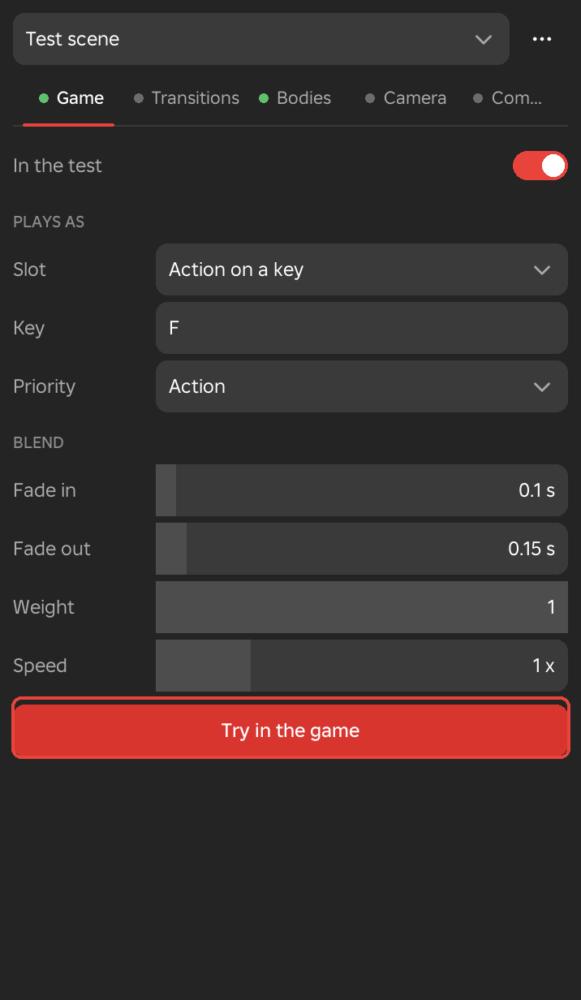
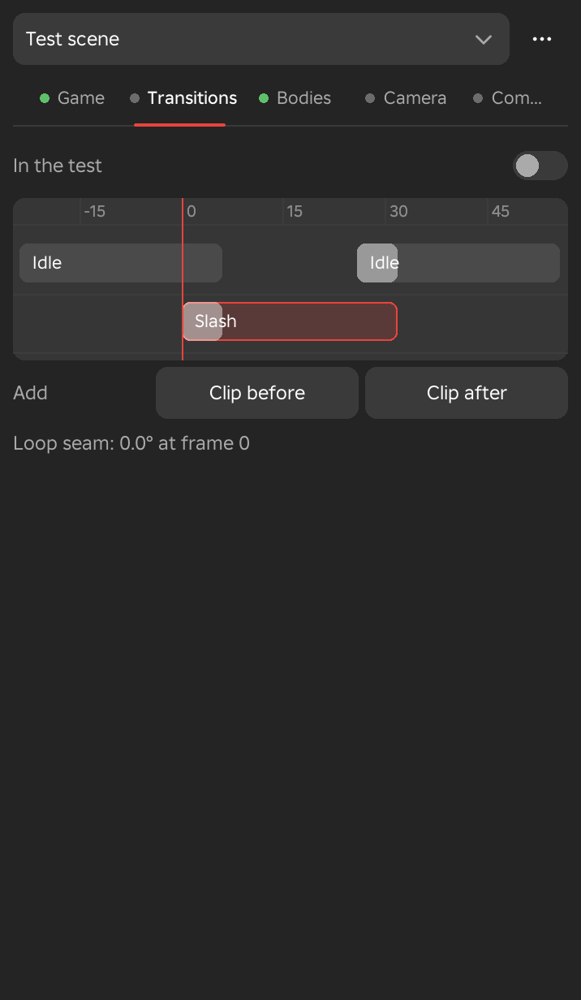
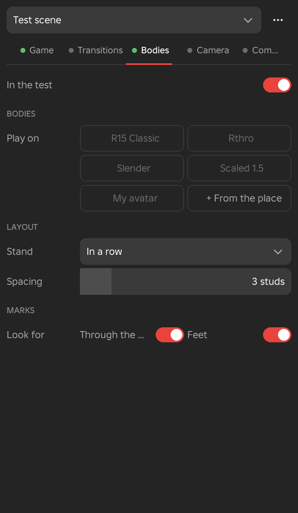
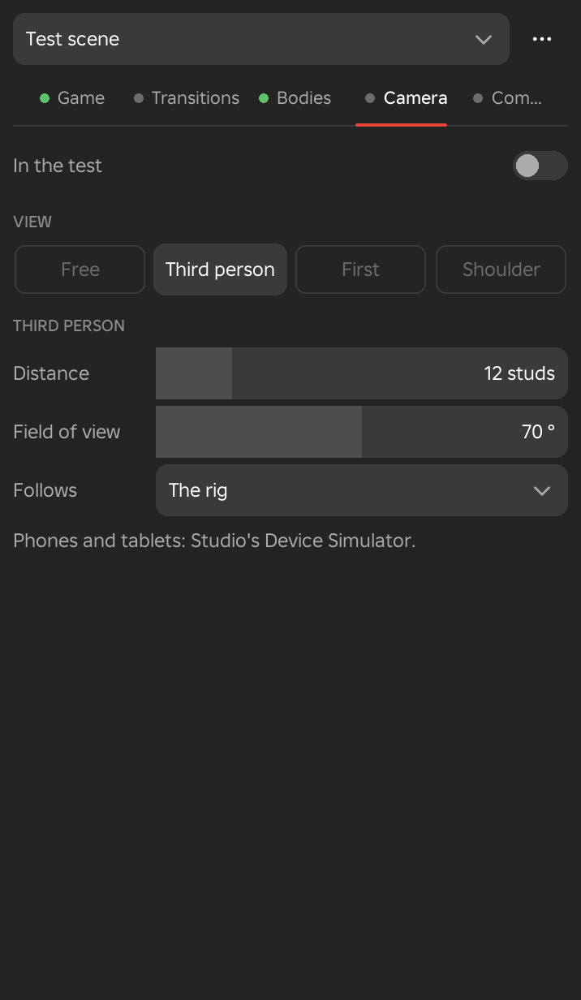
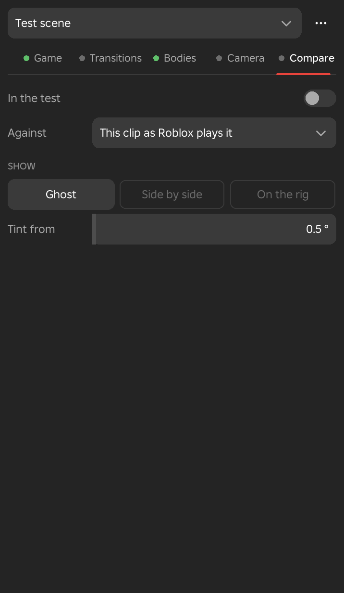

Test Bench
The Test Bench tries the open clip the way your game will play it: on your character in a running game, joined to the clips around it, on other body shapes, under a game camera, and against other versions of itself. It is a floating window with one tab for each of these, and a test scene keeps the values of all five.
Starting a Test
The top of the window holds the test scene and the five tabs. Everything below them belongs to the selected tab.
Test Bench Window
- Menu
- Game ‣ Test bench...
- Workspace
- Game data
The Test Bench opens as a floating window. It has a test scene picker with a more button at the top, then the tabs Game, Transitions, Bodies, Camera and Compare. Each tab tests one part of how the clip plays and has an In the test switch at its top. A dot on each tab shows whether that part is in the test, green when it is and grey when it is not. A new test scene has Game and Bodies in the test and the other three tabs out of it. When no animation is open, the window says "Open an animation to test it."
The window has no play buttons of its own. The space bar, the playhead and the timeline drive it. When you move the playhead, the bodies and the comparison copy show that frame. When you press Space, they play on their own, through Roblox's Animator, so events fire as Roblox fires them. After you edit the clip, the bench registers it again and rebuilds what it shows after a pause of about half a second.
With the bench open, each event on the timeline gets a small dot under its pin once Roblox has fired it. The dot is green when the event fired on its own frame, and red when it fired more than a frame away from where you keyed it. An event that is not in the saved clip at all cannot fire, and shows a red dot as well. Point at a dot to see the frames.
Closing the window takes away everything the bench made, which is the bodies, the comparison copy and the camera, and it turns off the game test. The Studio camera goes back to where it was.
See Also
Test bench in the Game menu, Animator Preview
Test Scenes
- Menu
- Game ‣ Test bench..., the scene picker at the top of the window
- Workspace
- Game data
A test scene keeps every value of every tab, including which tabs are in the test, so you can return to a setup in one click. The picker at the top of the window lists the scenes. Choosing one replaces the current values. Framez also remembers the values you were using when you close Studio, so the bench opens as you left it.
The list has three groups. The starting points come with Framez. My test scenes are the scenes you saved, and they are available in every place. In this place lists the scenes saved in the place itself, in ServerStorage, so they travel with it and anyone who opens the place can use them.
Options
- Attack on a key
- The Game tab plays the clip in the Action slot on the key F, at Action priority.
- Idle
- The clip plays in the Idle slot, at Idle priority.
- Walk
- The clip plays in the Walk slot, at Movement priority.
- Run
- The clip plays in the Run slot, at Movement priority.
- Emote on a key
- The clip plays in the Action slot on the key G, at Action priority, with the Camera tab in the test and set to Third person.
- More button
- The button with three dots, right of the picker. Save as my test scene... asks for a name and saves the scene in My test scenes. Save in this place... asks for a name and saves it in the place. Delete removes the scene that is showing, from wherever it is saved, and it appears only for a scene you saved.
Example
For example, save one test scene for each skill type in your game, with the right slot, key and priority, and use them to check a new clip in one click each.
Tabs
Each tab tests one part of how the clip plays. A tab does nothing until its In the test switch is on.
Game Tab
- Menu
- Game ‣ Test bench..., Game tab
- Workspace
- Game data
- Needs
- Studio in Play, for Try in the game
The Game tab puts the open clip on your own character when Studio is in Play, set up the way your game would play it. The clip plays in a slot, with a priority, fades, a weight and a speed. You see straight away whether the clip behaves in the game as it does in Framez, and this is where problems of priority show, when another animation plays over the clip.
Set the values, click Try in the game, and press Play in Studio. In the Action slot, the key plays the clip on your character. In any other slot, the clip takes the place of the animation your character's Animate script uses in that slot, and the original comes back when the test stops. While the game runs, anything you change in Framez reaches the playing character about half a second later, and the button then reads Send again.
A status line under the button reports what the game said, for example that F plays the clip on your character, or that the character's walk is the clip. When another animation of higher priority plays over the clip, a red line names it and its priority and asks you to raise the clip's priority. Closing the bench turns the game test off and puts the character's own animations back.
Options
- In the test
- Turns the game test on or off. Switching it off while a test is sent stops it.
- Slot
- Where the game plays the clip, chosen from Action on a key, Idle, Walk, Run, Jump, Fall, Climb and Swim. The default is Action on a key. The other slots replace the animation the Animate script plays in that state.
- Key
- Shown only for Action on a key. The key that plays the clip, typed as a letter, a digit or a key name such as LeftShift. The default is F. A clip that does not loop plays once and fades out at its end. A looping clip plays while the key is held and fades out when you let go. A name that is not a key is refused.
- Priority
- Roblox's animation priority for the clip, chosen from Core, Idle, Movement, Action, Action 2, Action 3 and Action 4. The default is Action. When two animations move the same limb, the one with the higher priority wins.
- Fade in
- How long the clip takes to come in, from 0 to 2 seconds. The default is 0.1.
- Fade out
- How long the clip takes to go, from 0 to 2 seconds. The default is 0.15.
- Weight
- How much of the clip shows over what plays under it, from 0 to 1. The default is 1.
- Speed
- The playback speed, from 0.1 to 4 times. The default is 1.
- Try in the game, Send again
- Sends the clip and these values to your character when you press Play. After the first send the button reads Send again.
Example
For example, to check that a sword attack on the key F overrides the run, leave the slot on Action on a key and the priority on Action, click Try in the game, press Play, run, and tap F. If the status line says the run plays over the attack, raise the attack's priority.

Transitions Tab
- Menu
- Game ‣ Test bench..., Transitions tab
- Workspace
- Game data
The Transitions tab tests how the clip joins the clips around it. Add the clip that plays before it and the clip that plays after it, and the bodies play the whole sequence with the fades between the clips, so you can see an idle run into a skill and settle out of it again. While Framez plays, the sequence plays from the playhead and loops back to its first block when it reaches the end.
The strip is a ruler with two lanes. The clips around yours sit on the upper lane, and your clip sits on the lower lane with a red outline. The ruler counts frames from your clip's first frame, so time before it is below 0. A white wedge at the left of a block is the fade into it, which overlaps the end of the block before it. A red line shows the playhead, or the point you scrubbed to.
Dragging works directly on the strip. Drag the body of a block to change how long it plays. Drag the first few pixels of its left edge to change the fade into it. Right-click a block to take it off, which is not possible for your own clip. Drag along the ruler to scrub through the join, and the bodies pose at that moment.
Options
- In the test
- Turns the sequence on. The bodies play the clips before and after yours, with the fades.
- Clip before, Clip after
- Add a block before or after your clip. A new block plays the game's Idle for 1 second. A block after your clip starts with a fade of 0.2 seconds.
- Clip
- The clip that plays in the selected block. On an R6 or R15 rig the choices are Roblox's default Idle, Walk, Run, Jump, Fall and Climb for that type, and any other save of this rig.
- Plays for
- How long the selected block plays, from 0.1 to 30 seconds. Your own clip is as long as the clip, scaled by its speed, so it has no Plays for.
- Fade
- How long the clip before the selected block takes to give way, from 0 to 5 seconds. Every block but the first has one.
- Weight
- How strongly the selected block shows, from 0 to 1. The default is 1.
- Speed
- The selected block's playback speed, from 0.1 to 4 times.
- Priority
- The Roblox animation priority of a block that is not your clip, with the same choices as on the Game tab. The default is Core.
- Loop seam
- A line under the rows for a clip that loops. It gives how many degrees the last frame is from the first at the limb that differs most. Beyond 2 degrees it names the limb, as in "Loop seam: RightLowerLeg jumps 6.3° at frame 0".
Example
For example, put the game's Run before a lunge and the game's Idle after it, with a fade of 0.2 seconds into each, and play the strip to see the run flow into the lunge and the lunge settle into the idle.

Bodies Tab
- Menu
- Game ‣ Test bench..., Bodies tab
- Workspace
- Game data
The Bodies tab plays the clip on other body shapes side by side with the rig, in the viewport. Each body stands with its feet on the rig's floor and plays the clip through its own Animator at Framez's frame. A clip made for one proportion can look different on another, with a hand through a torso or a foot sunk into the floor, and this tab finds those frames.
Tick the bodies to play on. The rig's type decides the choices. An R15 rig offers R15 Classic, Rthro, Slender, Scaled 1.5 and My avatar. An R6 rig offers R6, Scaled 1.5, Scaled 0.75 and My avatar. Any other rig offers Scaled 1.5 and Scaled 0.75. Every rig can also add models from the place.
Below the layout settings, Framez steps each body through the clip and lists the runs of frames where something looks wrong. A mark names the body, the limb and the problem, with the frames it lasts for, and clicking it moves the playhead to its first frame. Up to five marks are listed, followed by a count of the others. When there are none, the tab says "No marks."
Options
- In the test
- Turns the bodies on. They stand beside the rig and play the clip at Framez's frame.
- Play on
- Tiles for the bodies. A ticked tile plays the clip on that body. R15 Classic, Rthro and Slender are Roblox's avatar body types. The Scaled tiles scale the rig's own kind of body by the number shown. My avatar is your own Roblox avatar.
- + From the place
- Adds the model that is selected in the Explorer, which must be a model other than the rig. It appears as a button under the tiles, and clicking that button takes it off the bench again.
- Stand
- Where the bodies stand. In a row puts them beside the rig, Behind puts them one behind another behind the rig, and On the rig draws them over the rig, made see-through.
- Spacing
- The gap between bodies, from 0 to 20 studs. The default is 3.
- Look for
- Two checks that decide which marks are found. Through the body marks the end of an arm or leg, such as a hand or a foot, that goes inside the torso. Feet marks a foot more than 0.15 studs under the floor. Both are on by default.
Example
For example, a two-handed pose that touches the chest on the standard rig can push a hand through the torso on a Slender body. The mark for that frame range shows it, and a click takes you to the first frame so you can adjust the pose.

Camera Tab
- Menu
- Game ‣ Test bench..., Camera tab
- Workspace
- Game data
The Camera tab shows the clip through a game camera, so you can judge it the way a player will see it. The camera follows a body while Framez plays, and it only moves Studio's camera while the clip plays. When playback stops, the camera goes back to where it was. With no bodies ticked on the Bodies tab, the bench adds a copy of the rig for the camera to follow.
A third-person camera sits behind and above the head, looking at it. A shoulder camera sits behind and to the right of the head, looking past the character. A first-person camera sits at the head and looks out from it. A line at the foot of the tab reminds you that phones and tablets are tested with Studio's Device Simulator.
Options
- In the test
- Turns the game camera on.
- View
- Free, Third person, First or Shoulder. Free leaves Studio's camera alone, and the other three place it as described above. The default is Third person.
- Distance
- How far the camera sits from the head, from 1 to 60 studs. The default is 12. First has no distance.
- Field of view
- The camera's field of view, from 20 to 120 degrees. The default is 70.
- Follows
- Which body the camera follows, chosen from the bodies on the bench, or the rig when there are none.
Example
For example, check a sword swing with the shoulder camera at a distance of 8 studs, to see whether the blade stays in view of a player who is looking over the character's shoulder.

Compare Tab
- Menu
- Game ‣ Test bench..., Compare tab
- Workspace
- Game data
The Compare tab shows where the clip differs from another version of itself. It plays the other version on a copy of the rig and tints the parts of the copy that are further from your keys than a limit you set. The version can be the clip as Roblox plays it, which shows where Roblox's playback differs from Framez's, the last save, or any other save of the rig.
The tab names the most changed limb, with its difference in degrees and the frame where it is greatest, and clicking that line moves the playhead to the frame. When nothing differs by half a degree or more, it says "No differences." The timeline also gains a Difference row under the rig. It draws a red curve of how far the copy is from your keys at the limb that is furthest off on each frame, with the greatest value at the right of the row's name.
Options
- In the test
- Turns the comparison on.
- Against
- What the clip is compared with. This clip as Roblox plays it is the default. The last save needs the clip to have been saved already, or the bench says there is no save to compare against. Any other save of the rig is listed by name.
- Show
- Ghost shows a see-through copy beside the rig. Side by side shows a solid copy beside the rig. On the rig draws the copy over the rig, where any difference shows as a double.
- Tint from
- Parts that are further off than this many degrees are tinted red, from 0 to 30. The default is 0.5. A value of 0 turns the tint off.
Changing Show or Tint from here also changes how Animator preview draws its copy, because both use the same copy.
Example
For example, after retiming a clip, compare it with the last save, and the Difference row shows at once which frames the change touched and the tab names the limb that moved most.
